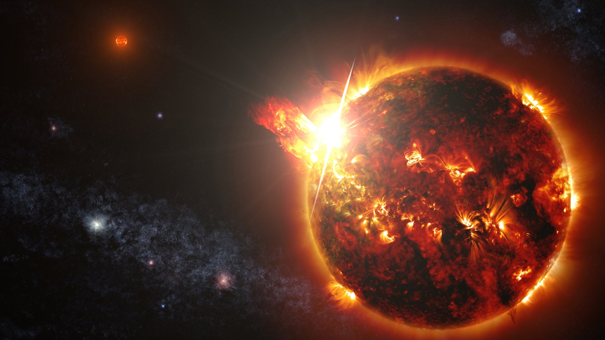

The Solar System formed 4.6 billion years ago from the gravitational collapse of a giant interstellar molecular cloud.
The vast majority of the system's mass is in the Sun, with the majority of the remaining mass contained in Jupiter.

Of the bodies that orbit the Sun directly, the largest are the four gas and ice giants and the four terrestrial planets, followed by an unknown number of dwarf planets and innumerable small Solar System bodies.
There are two ice giants in the Solar System: Uranus and Neptune.

A terrestrial planet, telluric planet, or rocky planet, is a planet that is composed primarily of silicate rocks or metals. Within the Solar System, the terrestrial planets accepted by the IAU are the inner planets closest to the Sun, i.e. Mercury, Venus, Earth and Mars.
A gas giant is a giant planet composed mainly of hydrogen and helium. Gas giants are also called failed stars because they contain the same basic elements as a star. Jupiter and Saturn are the gas giants of the Solar System.